Role-Based Access Control
If you remember, in the previous chapter we created the User Demo website which allowed us to manage users and permit access to some web pages to authenticated users only. In this chapter, we will extend the User Demo and show how to implement the Role-Based Access Control (RBAC). The RBAC allows to permit or deny access for certain users to certain website pages based on roles and permissions.
Since you have already known a lot about Laminas from reading previous chapters, in this chapter we will omit discussing some obvious things and concentrate on conceptual moments only. It is recommended that you refer to the Role Demo sample bundled with this book, which is a complete website that you can run and see everything in action. All code discussed in this chapter is part of this sample application.
Laminas components covered in this chapter:
| Component | Description |
|---|---|
@Laminas\Permissions\Rbac |
Provides RBAC container implementation. |
@Laminas\Cache |
Provides functionality for storing data in cache. |
Get Role Demo Sample from GitHub
For demonstration, in this chapter, we will create a real-life Role Demo website that shows how to:
- Implement roles and permissions in your website
- Organize roles in database into an hierarchy
- Manage roles and permissions in user interface
- Use @
Laminas\Permissions\Rbaccomponent to implement role-based access control - Use dynamic assertions to implement complex access control rules
The Role Demo sample will be based on the User Demo sample that we created in the previous chapter.
To download the Role Demo application, visit this page and click the Clone or Download button to download the code as a ZIP archive. When download is complete, unpack the archive to some directory.
Then navigate to the roledemo directory containing the
source code of the Role Demo web application:
/using-laminas-book-samples
/roledemo
...
The Role Demo is a website which can be installed on your machine.
Detailed instructions on how to install the Role Demo sample can be found in README.md file located in the sample directory.
Introduction to RBAC
Laminas provides a special component named @Laminas\Permissions\Rbac which implements a container for roles and permissions.
To install the @Laminas\Permissions\Rbac component in your web application, type the following command:
php composer.phar require laminas/laminas-permissions-rbac
Roles and Permissions
A role is a group of users. For example, in a Blog application, there may be the following roles: Viewer, Author, Editor, and Administrator.
| Role Name | Description |
|---|---|
Viewer |
Can read any post and can do nothing else. |
Author |
Can view posts plus create a post, edit it and finally publish it. |
Editor |
Can view posts plus edit and publish any post. |
Administrator |
Can do anything a Viewer and Editor can do plus delete posts. |
Table 17.1. Example roles in a Blog website
A user may be assigned a role or several roles at once. For example, user John may be a Viewer and Editor at the same time.
A role may inherit permissions from other roles. In other words, roles may be organized into an hierarchy when parent roles inherit permissions of child roles. For example, in our Blog application, Administrator role would inherit permissions from Editor role (see figure 17.1 below). This is because Administrator can do the same things as Editor plus delete posts. Editor and Author roles would inherit permissions from the Viewer role.
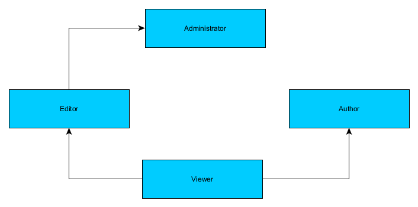
A role may be assigned with several permissions. A permission is a single typical action in the system. Here are several examples of permissions in a Blog website:
| Permission Name | Description |
|---|---|
post.view |
View any post. |
post.edit |
Edit any post. |
post.own.edit |
Edit only owned posts. |
post.publish |
Publish any post. |
post.own.publish |
Publish only owned post. |
post.delete |
Delete any post. |
Table 17.2. Example permissions in a Blog website
For example, the Viewer role would be assigned the post.view permission. The Editor role would be assigned
the post.edit and post.publish permissions. The Author role would be assigned with
the post.own.edit and post.own.publish permissions. And the role Administrator would be assigned
with the post.delete permission.
RBAC Container
In Laminas, you can use the @Rbac class living in @Laminas\Permissions\Rbac namespace as a simple container for your
roles and permissions. With this container, you store your roles in memory organized in an hierarchy and assigned
with permissions.
For example, let's create an @Rbac container for the Blog application and fill it with roles and permissions:
use Laminas\Permissions\Rbac\Rbac;
// Create Rbac container.
$rbac = new Rbac();
// The following is to tell Rbac to create some parent roles if not exist yet
$rbac->setCreateMissingRoles(true);
// Create role hierarchy
$rbac->addRole('Viewer', ['Editor', 'Author']);
$rbac->addRole('Editor', ['Administrator']);
$rbac->addRole('Author');
$rbac->addRole('Administrator');
// Assign permissions to the Viewer role.
$rbac->getRole('Viewer')->addPermission('post.view');
// Assign permissions to the Author role.
$rbac->getRole('Author')->addPermission('post.own.edit');
$rbac->getRole('Author')->addPermission('post.own.publish');
// Assign permissions to the Editor role.
$rbac->getRole('Editor')->addPermission('post.edit');
$rbac->getRole('Editor')->addPermission('post.publish');
// Assign permissions to the Administrator role.
$rbac->getRole('Administrator')->addPermission('post.delete');
As you can see, a role is added to the @Rbac container with the help of the addRole() method.
The addRole() method takes two arguments: the name of the role to be created, and the name(s)
of its parent role(s). If the parent roles do not exist yet, they are created automatically
(for that purpose we use the setCreateMissingRoles() method).
Permissions are assigned to the created role with the help of role's addPermission() method.
Checking Permissions
When you have an @Rbac container set up, you can query if the role has certain permission
with the isGranted() method, as follows:
// The following will return false, because the Viewer can't delete posts
$rbac->isGranted('Viewer', 'post.delete');
// The following will return true, because admins can delete posts
$rbac->isGranted('Administrator', 'post.delete');
The isGranted() method checks the role and its children and looks for the given permission. If it finds
the permission, it returns true; otherwise false.
Default Roles in the Role Demo Sample
Since our Role Demo application is designed to be the base for your own more complex websites, for our Role Demo sample, we will have only the following simple default roles: Administrator and Guest.
You will be able to add more roles via user interface of the website.
We will have the following default permissions:
| Permission Name | Description |
|---|---|
user.manage |
Manage users (add/edit/delete). |
role.manage |
Manage roles (add/edit/delete). |
permission.manage |
Manage permissions (add/edit/delete). |
profile.any.view |
View any user profile in the system. |
profile.own.view |
View own profile. |
Table 17.3. Default permissions in the Role Demo website
The first three permissions will allow Administrator to manage users, roles and permissions via user interface.
The last two permissions (profile.any.view and profile.own.view) are mostly for demonstration of
how Rbac works and can in theory be deleted from your own website if you do not have the user profile page.
The profile.any.view allows Administrator to access http://localhost/application/settings/<user_id> page,
which is the user profile of a user with the given ID.
The profile.own.view allows Guest to access their own profile page http://localhost/application/settings.
You will be able to create additional permissions via the user interface of the website.
Introduction to Dynamic Assertions
You might notice that for the Blog example we had two "special" permissions named post.own.edit and post.own.publish.
Those permissions are special, because they allow the author to edit only the posts he is the creator of.
To "check" such permission against the real user, we need to additionally determine if the post really belongs to that user. This is called a dynamic assertion.
In the Role Demo website, we also will have a special permission called profile.own.view. What makes it special
is that it allows the user to view a profile the user is the owner of.
To implement dynamic assertions in the Role Demo sample, we will use a special service called the assertion manager.
This assertion manager will be implemented as the RbacAssertionManager class, which lives in the
Application\Service namespace and looks like the following:
<?php
namespace Application\Service;
use Laminas\Permissions\Rbac\Rbac;
use User\Entity\User;
/**
* This service is used for invoking user-defined RBAC dynamic assertions.
*/
class RbacAssertionManager
{
/**
* Entity manager.
* @var Doctrine\ORM\EntityManager
*/
private $entityManager;
/**
* Auth service.
* @var Laminas\Authentication\AuthenticationService
*/
private $authService;
/**
* Constructs the service.
*/
public function __construct($entityManager, $authService)
{
$this->entityManager = $entityManager;
$this->authService = $authService;
}
/**
* This method is used for dynamic assertions.
*/
public function assert(Rbac $rbac, $permission, $params)
{
$currentUser = $this->entityManager->getRepository(User::class)
->findOneByEmail($this->authService->getIdentity());
if ($permission=='profile.own.view' && $params['user']->getId()==$currentUser->getId())
return true;
return false;
}
}
As you can see from the code above, the class has the assert() method which accepts three arguments:
- the
$rbacis the container of our roles and permissions; - the
$permissionis the name of the permission to check; - the
$paramsis an array of parameters (it can be used for example to pass the user owning the blog post).
Inside the assert() method, we can get the currently logged in user and compare it with the user passed, this
way we can return true if the user is trying to open its own profile; otherwise false.
In theory, you can have many assertion managers in your website (for example, if your Blog module has some dynamic assertions, you can create and register an assertion manager for that module).
Setting Up the Database
In our Role Demo sample, we will store the role hierarchy in the "roledemo" database. We will create the following tables (see figure 17.2):
roletable will contain data related to a role (its name and description)role_hierarchytable will contain parent-child relationships between rolespermissiontable will contain permissionsrole_permissiontable will allow to assign permissions to rolesuser_roletable will allow to assign roles to usersusertable will contain data of users (we created this table earlier in User Demo sample)
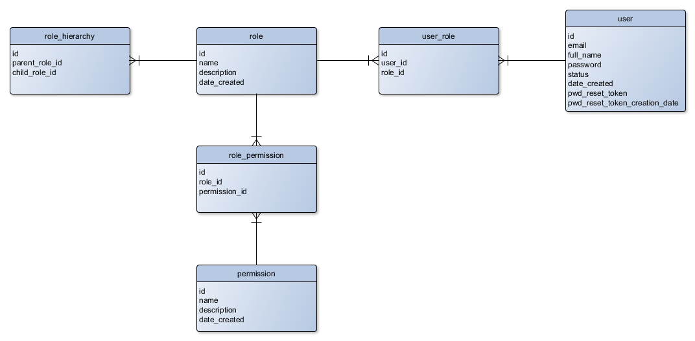
You can find a database migration, which creates these tables, in the Role Demo sample application. To run migrations, type the following command:
./vendor/bin/doctrine-module migrations:migrate
If you are new to migrations, refer to chapter Database Migrations.
Implementing Entities
The Role Demo sample uses Doctrine ORM for managing database. We have already learned how to use Doctrine in Database Management with Doctrine ORM.
For storing information about roles and permissions in database, we will create the Role and Permission
entities. The Role entity is mapped
onto the role database table, while the Permission entity is mapped onto the permission table.
Those are typical Doctrine entity classes.
Create the Role.php file inside the Entity directory under the User module's source directory. Put the following code into that file:
<?php
namespace User\Entity;
use Doctrine\ORM\Mapping as ORM;
use Doctrine\Common\Collections\ArrayCollection;
/**
* This class represents a role.
* @ORM\Entity()
* @ORM\Table(name="role")
*/
class Role
{
/**
* @ORM\Id
* @ORM\Column(name="id")
* @ORM\GeneratedValue
*/
protected $id;
/**
* @ORM\Column(name="name")
*/
protected $name;
/**
* @ORM\Column(name="description")
*/
protected $description;
/**
* @ORM\Column(name="date_created")
*/
protected $dateCreated;
/**
* @ORM\ManyToMany(targetEntity="User\Entity\Role")
* @ORM\JoinTable(name="role_hierarchy",
* joinColumns={@ORM\JoinColumn(name="child_role_id", referencedColumnName="id")},
* inverseJoinColumns={@ORM\JoinColumn(name="parent_role_id", referencedColumnName="id")}
* )
*/
private $parentRoles;
/**
* @ORM\ManyToMany(targetEntity="User\Entity\Role")
* @ORM\JoinTable(name="role_hierarchy",
* joinColumns={@ORM\JoinColumn(name="parent_role_id", referencedColumnName="id")},
* inverseJoinColumns={@ORM\JoinColumn(name="child_role_id", referencedColumnName="id")}
* )
*/
protected $childRoles;
/**
* @ORM\ManyToMany(targetEntity="User\Entity\Permission")
* @ORM\JoinTable(name="role_permission",
* joinColumns={@ORM\JoinColumn(name="role_id", referencedColumnName="id")},
* inverseJoinColumns={@ORM\JoinColumn(name="permission_id", referencedColumnName="id")}
* )
*/
private $permissions;
/**
* Constructor.
*/
public function __construct()
{
$this->parentRoles = new ArrayCollection();
$this->childRoles = new ArrayCollection();
$this->permissions = new ArrayCollection();
}
/**
* Returns role ID.
* @return integer
*/
public function getId()
{
return $this->id;
}
/**
* Sets role ID.
* @param int $id
*/
public function setId($id)
{
$this->id = $id;
}
public function getName()
{
return $this->name;
}
public function setName($name)
{
$this->name = $name;
}
public function getDescription()
{
return $this->description;
}
public function setDescription($description)
{
$this->description = $description;
}
public function getDateCreated()
{
return $this->dateCreated;
}
public function setDateCreated($dateCreated)
{
$this->dateCreated = $dateCreated;
}
public function getParentRoles()
{
return $this->parentRoles;
}
public function getChildRoles()
{
return $this->childRoles;
}
public function getPermissions()
{
return $this->permissions;
}
public function addParent(Role $role)
{
if ($this->getId() == $role->getId()) {
return false;
}
if (!$this->hasParent($role)) {
$this->parentRoles[] = $role;
return true;
}
return false;
}
public function clearParentRoles()
{
$this->parentRoles = new ArrayCollection();
}
public function hasParent(Role $role)
{
if ($this->getParentRoles()->contains($role)) {
return true;
}
return false;
}
}
As you could determine from the code above, the Role entity is a typical Doctrine entity having annotated properties and getter and setter methods for retrieving/setting those properties.
Next, create the Permission.php file inside the Entity directory under the User module's source directory. Put the following code into that file:
<?php
namespace User\Entity;
use Doctrine\ORM\Mapping as ORM;
use Doctrine\Common\Collections\ArrayCollection;
/**
* This class represents a permission.
* @ORM\Entity()
* @ORM\Table(name="permission")
*/
class Permission
{
/**
* @ORM\Id
* @ORM\Column(name="id")
* @ORM\GeneratedValue
*/
protected $id;
/**
* @ORM\Column(name="name")
*/
protected $name;
/**
* @ORM\Column(name="description")
*/
protected $description;
/**
* @ORM\Column(name="date_created")
*/
protected $dateCreated;
/**
* @ORM\ManyToMany(targetEntity="User\Entity\Role")
* @ORM\JoinTable(name="role_permission",
* joinColumns={@ORM\JoinColumn(name="permission_id", referencedColumnName="id")},
* inverseJoinColumns={@ORM\JoinColumn(name="role_id", referencedColumnName="id")}
* )
*/
private $roles;
/**
* Constructor.
*/
public function __construct()
{
$this->roles = new ArrayCollection();
}
public function getId()
{
return $this->id;
}
public function setId($id)
{
$this->id = $id;
}
public function getName()
{
return $this->name;
}
public function setName($name)
{
$this->name = $name;
}
public function getDescription()
{
return $this->description;
}
public function setDescription($description)
{
$this->description = $description;
}
public function getDateCreated()
{
return $this->dateCreated;
}
public function setDateCreated($dateCreated)
{
$this->dateCreated = $dateCreated;
}
public function getRoles()
{
return $this->roles;
}
}
Finally, we will slightly extend the User entity that already created in the User Demo website and add
the property and methods related to roles:
<?php
namespace User\Entity;
use Doctrine\ORM\Mapping as ORM;
use Doctrine\Common\Collections\ArrayCollection;
/**
* This class represents a registered user.
* @ORM\Entity()
* @ORM\Table(name="user")
*/
class User
{
// User status constants.
const STATUS_ACTIVE = 1; // Active user.
const STATUS_RETIRED = 2; // Retired user.
/**
* @ORM\Id
* @ORM\Column(name="id")
* @ORM\GeneratedValue
*/
protected $id;
/**
* @ORM\Column(name="email")
*/
protected $email;
/**
* @ORM\Column(name="full_name")
*/
protected $fullName;
/**
* @ORM\Column(name="password")
*/
protected $password;
/**
* @ORM\Column(name="status")
*/
protected $status;
/**
* @ORM\Column(name="date_created")
*/
protected $dateCreated;
/**
* @ORM\Column(name="pwd_reset_token")
*/
protected $passwordResetToken;
/**
* @ORM\Column(name="pwd_reset_token_creation_date")
*/
protected $passwordResetTokenCreationDate;
/**
* @ORM\ManyToMany(targetEntity="User\Entity\Role")
* @ORM\JoinTable(name="user_role",
* joinColumns={@ORM\JoinColumn(name="user_id", referencedColumnName="id")},
* inverseJoinColumns={@ORM\JoinColumn(name="role_id", referencedColumnName="id")}
* )
*/
private $roles;
/**
* Constructor.
*/
public function __construct()
{
$this->roles = new ArrayCollection();
}
/**
* Returns user ID.
* @return integer
*/
public function getId()
{
return $this->id;
}
/**
* Sets user ID.
* @param int $id
*/
public function setId($id)
{
$this->id = $id;
}
/**
* Returns email.
* @return string
*/
public function getEmail()
{
return $this->email;
}
/**
* Sets email.
* @param string $email
*/
public function setEmail($email)
{
$this->email = $email;
}
/**
* Returns full name.
* @return string
*/
public function getFullName()
{
return $this->fullName;
}
/**
* Sets full name.
* @param string $fullName
*/
public function setFullName($fullName)
{
$this->fullName = $fullName;
}
/**
* Returns status.
* @return int
*/
public function getStatus()
{
return $this->status;
}
/**
* Returns possible statuses as array.
* @return array
*/
public static function getStatusList()
{
return [
self::STATUS_ACTIVE => 'Active',
self::STATUS_RETIRED => 'Retired'
];
}
/**
* Returns user status as string.
* @return string
*/
public function getStatusAsString()
{
$list = self::getStatusList();
if (isset($list[$this->status]))
return $list[$this->status];
return 'Unknown';
}
/**
* Sets status.
* @param int $status
*/
public function setStatus($status)
{
$this->status = $status;
}
/**
* Returns password.
* @return string
*/
public function getPassword()
{
return $this->password;
}
/**
* Sets password.
* @param string $password
*/
public function setPassword($password)
{
$this->password = $password;
}
/**
* Returns the date of user creation.
* @return string
*/
public function getDateCreated()
{
return $this->dateCreated;
}
/**
* Sets the date when this user was created.
* @param string $dateCreated
*/
public function setDateCreated($dateCreated)
{
$this->dateCreated = $dateCreated;
}
/**
* Returns password reset token.
* @return string
*/
public function getResetPasswordToken()
{
return $this->passwordResetToken;
}
/**
* Sets password reset token.
* @param string $token
*/
public function setPasswordResetToken($token)
{
$this->passwordResetToken = $token;
}
/**
* Returns password reset token's creation date.
* @return string
*/
public function getPasswordResetTokenCreationDate()
{
return $this->passwordResetTokenCreationDate;
}
/**
* Sets password reset token's creation date.
* @param string $date
*/
public function setPasswordResetTokenCreationDate($date)
{
$this->passwordResetTokenCreationDate = $date;
}
/**
* Returns the array of roles assigned to this user.
* @return array
*/
public function getRoles()
{
return $this->roles;
}
/**
* Returns the string of assigned role names.
*/
public function getRolesAsString()
{
$roleList = '';
$count = count($this->roles);
$i = 0;
foreach ($this->roles as $role) {
$roleList .= $role->getName();
if ($i<$count-1)
$roleList .= ', ';
$i++;
}
return $roleList;
}
/**
* Assigns a role to user.
*/
public function addRole($role)
{
$this->roles->add($role);
}
}
Implementing Role Management
In the Role Demo sample, we will create a convenient user interface for managing roles.
You can access the role management page by logging in as
admin@example.comand opening menu Admin -> Manage Roles.
The role management will be implemented inside the RoleController controller living in the
User\Controller namespace. The action methods of the RoleController are listed in table 17.4:
| Action Name | Description |
|---|---|
addAction() |
Allows to add a new role. |
deleteAction() |
Deletes an existing role. |
editAction() |
Allows to edit an existing role. |
editPermissionsAction() |
Allows to assign permissions to a role. |
indexAction() |
Displays the list of existing roles. |
viewAction() |
Displays the details of a role. |
Table 17.4. Actions of the RoleController controller
The RoleController works in pair with the RoleManager service which lives in User\Service namespace.
The RoleController and RoleManager contain nothing new and special, so we will skip their
discussion here and will just provide some screenshots of the resulting user interface below.
You can find the complete code of the
RoleControllerandRoleManagerclasses in the Role Demo sample.
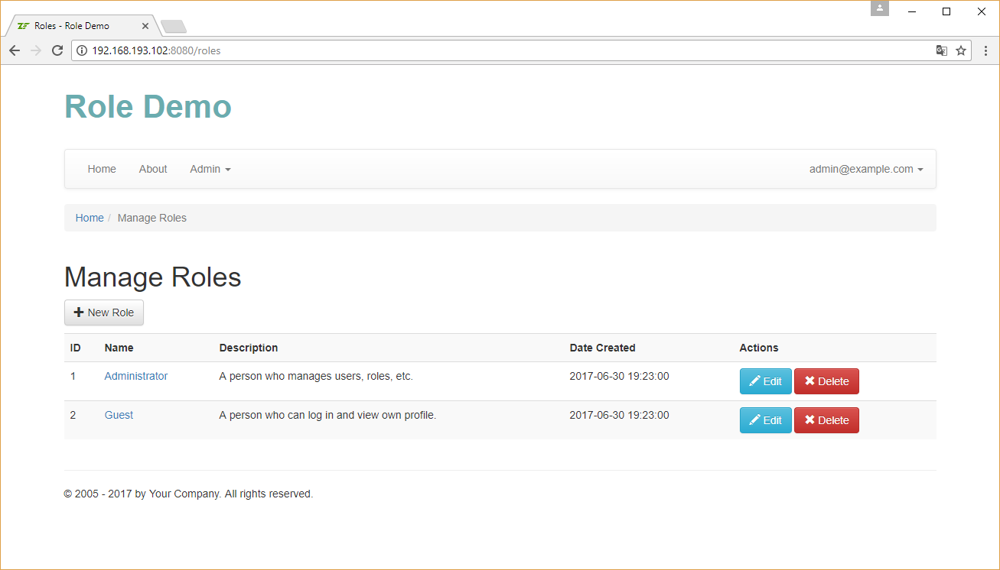
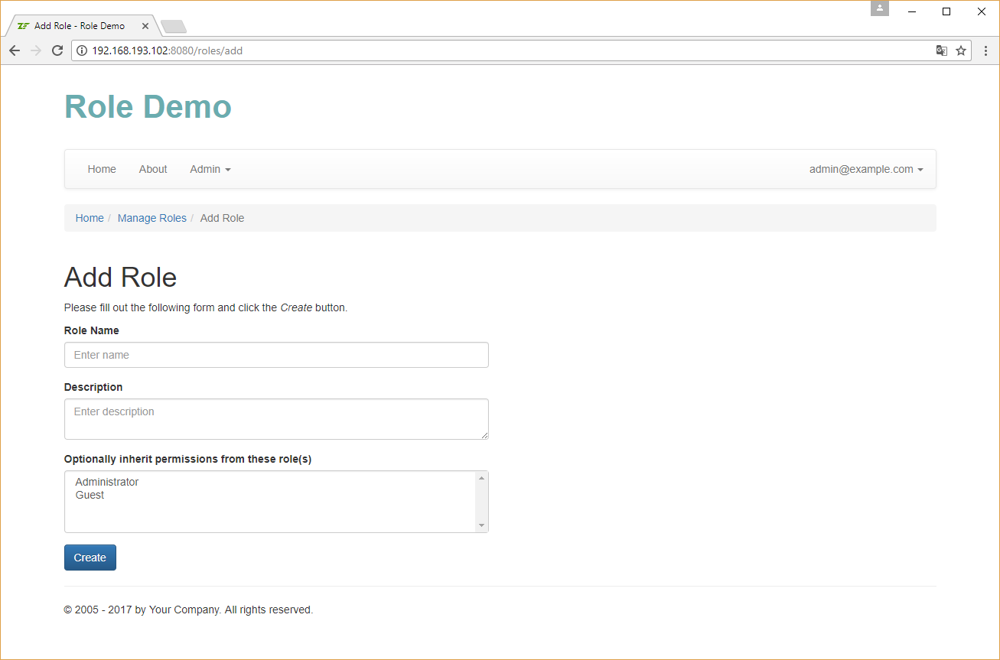
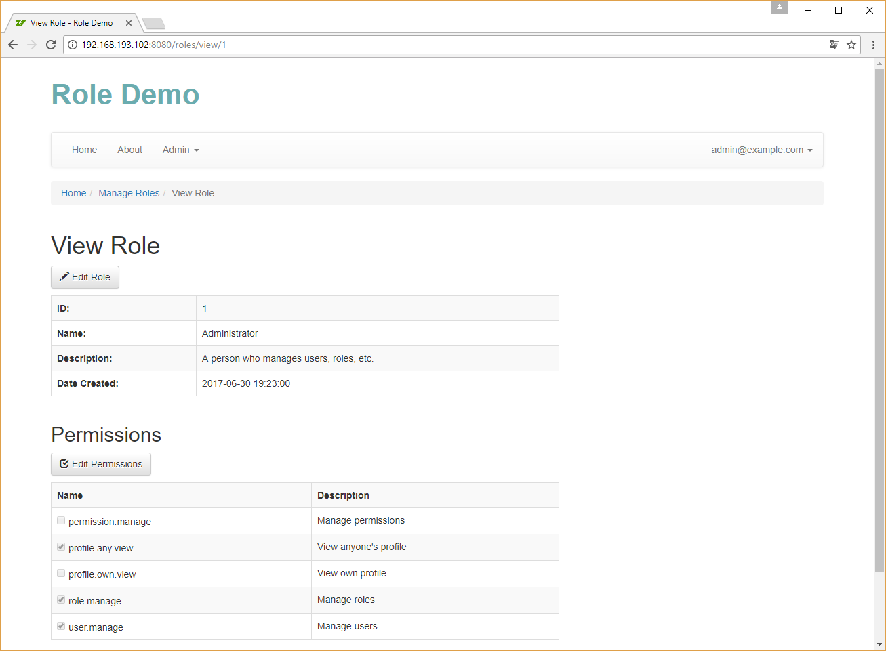
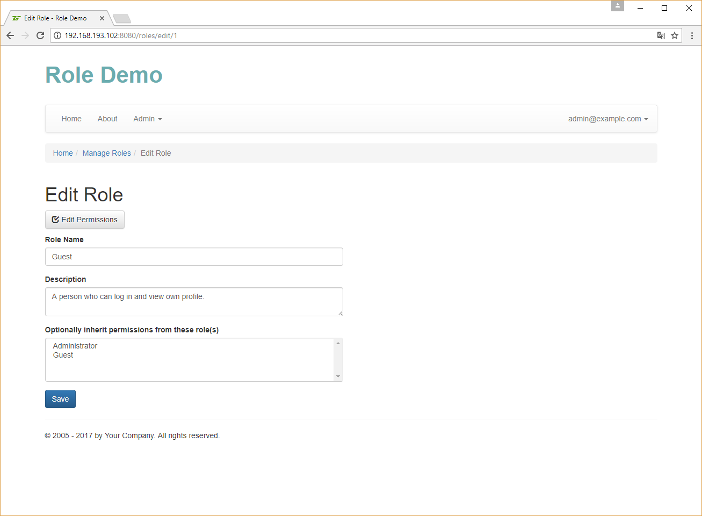
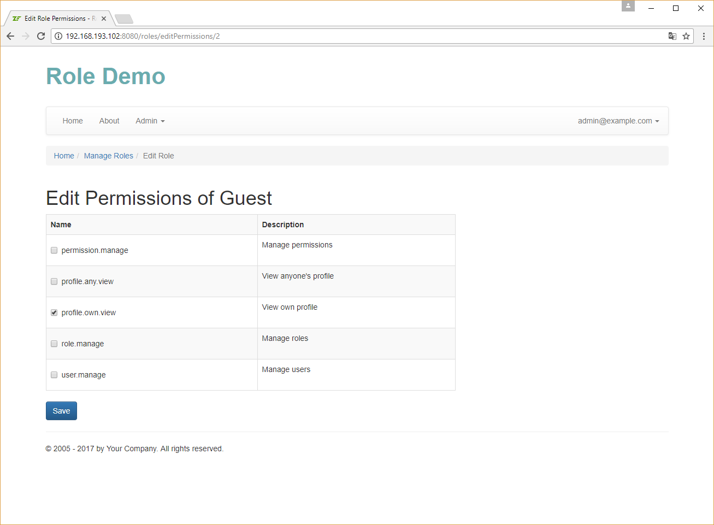
Implementing Permission Management
In the Role Demo sample, we will create a convenient user interface for managing permissions. It will be useful if you plan to add new permissions or remove existing ones.
You can access the permission management page by logging in as
admin@example.comand opening menu Admin -> Manage Permissions.
The permission management will be implemented inside the PermissionController controller living in the
User\Controller namespace. The action methods of the PermissionController are listed in table 17.5:
| Action Name | Description |
|---|---|
addAction() |
Allows to add a new permission. |
deleteAction() |
Deletes an existing permission. |
editAction() |
Allows to edit an existing permission. |
indexAction() |
Displays the list of existing permissions. |
viewAction() |
Displays the details of a permission. |
Table 17.5. Actions of the PermissionController controller
The PermissionController works in pair with the PermissionManager service which
lives in User\Service namespace.
The PermissionController and PermissionManager contain nothing new and special, so we will skip their
discussion here and will just provide some screenshots of the resulting user interface below.
You can find the complete code of the
PermissionControllerandPermissionManagerclasses in the Role Demo sample.
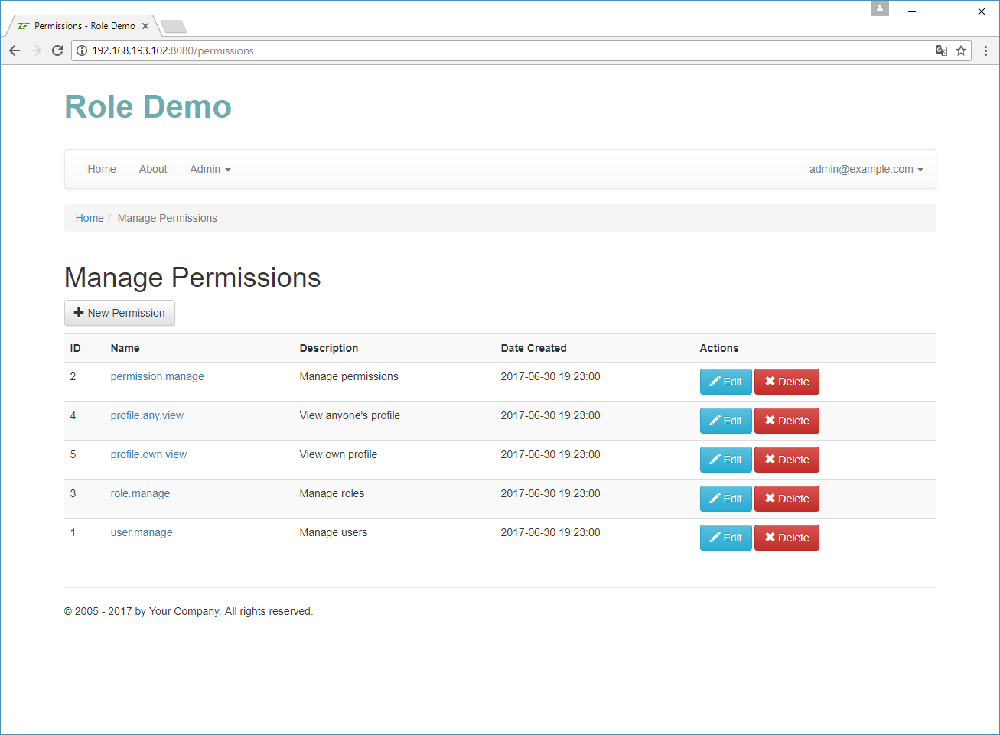
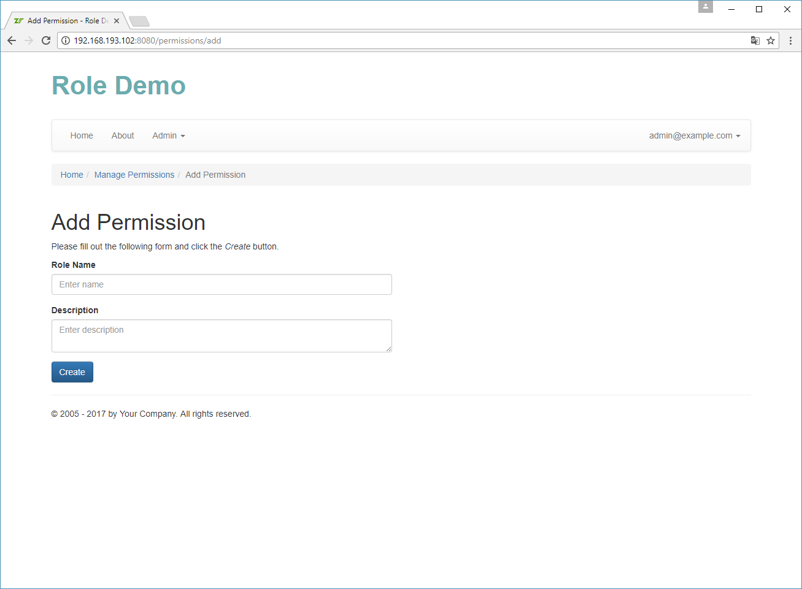
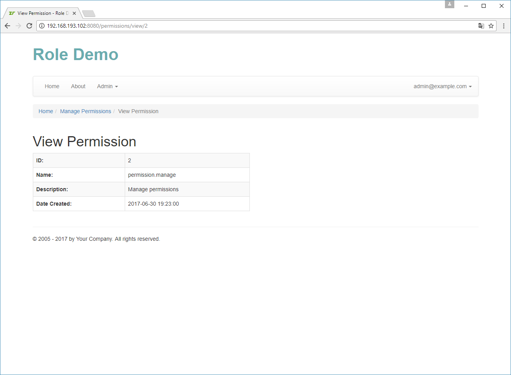
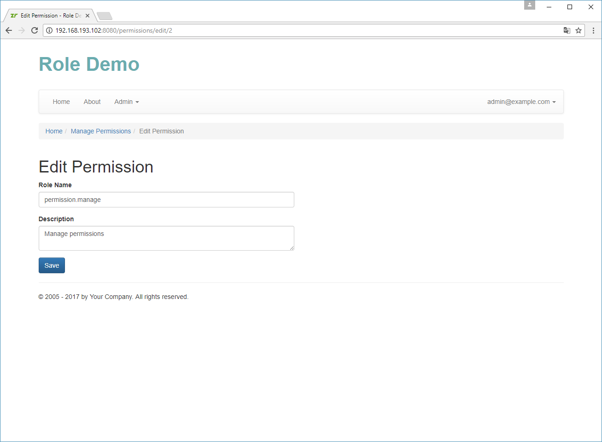
Assigning Roles to a User
In the Role Demo website, you can assign roles to a user via the convenient user interface. Open the Admin -> Manage Users menu and click Edit on the user of your choice. On the page that appears, select the roles you'd like to assign to the user and click the Save button.
This functionality contain nothing new and special, so we will skip its detailed discussion here and will just provide a screenshot of the user interface below.
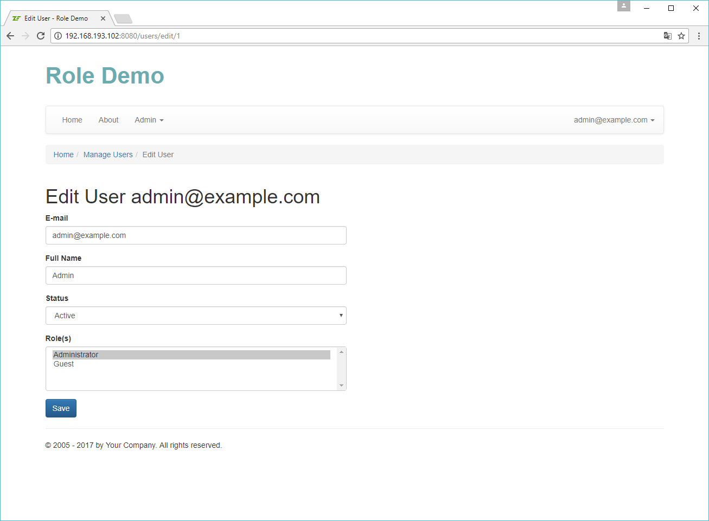
Implementing RbacManager
The next thing we will discuss will be the functionality for creating the Rbac container,
whose purpose is loading the role hierarchy from the database,
and caching the data in the filesystem cache.
The cache allows to store frequently used data in fast storage. For example, retrieving roles and permissions from database on each page load may be rather slow, while storing the precomputed role hierarchy in a file may be faster.
Setting Up Caching
First, let's set up caching. To do that, you need to install the Laminas\Cache and Laminas\Serializer components with
the following commands:
php composer.phar require laminas/laminas-cache
php composer.phar require laminas/laminas-serializer
Finally, edit the config/autoload/global.php and add the following lines:
use Laminas\Cache\Storage\Adapter\Filesystem;
return [
//...
// Cache configuration.
'caches' => [
'FilesystemCache' => [
'adapter' => [
'name' => Filesystem::class,
'options' => [
// Store cached data in this directory.
'cache_dir' => './data/cache',
// Store cached data for 1 hour.
'ttl' => 60*60*1
],
],
'plugins' => [
[
'name' => 'serializer',
'options' => [
],
],
],
],
],
//...
];
This will allow you to use the Filesystem cache and store cached data
in APP_DIR/data/cache directory.
If you want to learn more about caching, please refer to the
Laminas\CacheLaminas component documentation.
Writing the RbacManager Service
The purpose of the RbacManager service will be to construct the Rbac container and load
the roles and permissions from database. If the needed information is already saved to cache,
it will load it from cache instead of loading from database.
Another goal of the RbacManager service will be to use the assertion manager we wrote earlier
and check for dynamic assertions.
The RbacManager class will have two methods:
- the
init()method will be used to load role hierarchy from database and save it in cache; - the
isGranted()method will be used to query theRbaccontainer if the given user has the given permission (and checking the assertion manager(s) for the dynamic assertions).
The RbacManager class will read the configuration and look for the rbac_manager key.
The key should contain the assertions subkey, in which you can register all assertion managers that you have.
return [
//...
// This key stores configuration for RBAC manager.
'rbac_manager' => [
'assertions' => [Service\RbacAssertionManager::class],
],
];
The code of the RbacManager class living in User\Service namespace is presented below.
<?php
namespace User\Service;
use Laminas\Permissions\Rbac\Rbac;
use Laminas\Permissions\Rbac\Role as RbacRole;
use User\Entity\User;
use User\Entity\Role;
use User\Entity\Permission;
/**
* This service is responsible for initialzing RBAC (Role-Based Access Control).
*/
class RbacManager
{
/**
* Doctrine entity manager.
* @var Doctrine\ORM\EntityManager
*/
private $entityManager;
/**
* RBAC service.
* @var Laminas\Permissions\Rbac\Rbac
*/
private $rbac;
/**
* Auth service.
* @var Laminas\Authentication\AuthenticationService
*/
private $authService;
/**
* Filesystem cache.
* @var Laminas\Cache\Storage\StorageInterface
*/
private $cache;
/**
* Assertion managers.
* @var array
*/
private $assertionManagers = [];
/**
* Constructs the service.
*/
public function __construct($entityManager, $authService, $cache, $assertionManagers)
{
$this->entityManager = $entityManager;
$this->authService = $authService;
$this->cache = $cache;
$this->assertionManagers = $assertionManagers;
}
/**
* Initializes the RBAC container.
*/
public function init($forceCreate = false)
{
if ($this->rbac!=null && !$forceCreate) {
// Already initialized; do nothing.
return;
}
// If user wants us to reinit RBAC container, clear cache now.
if ($forceCreate) {
$this->cache->removeItem('rbac_container');
}
// Try to load Rbac container from cache.
$this->rbac = $this->cache->getItem('rbac_container', $result);
if (!$result)
{
// Create Rbac container.
$rbac = new Rbac();
$this->rbac = $rbac;
// Construct role hierarchy by loading roles and permissions from database.
$rbac->setCreateMissingRoles(true);
$roles = $this->entityManager->getRepository(Role::class)
->findBy([], ['id'=>'ASC']);
foreach ($roles as $role) {
$roleName = $role->getName();
$parentRoleNames = [];
foreach ($role->getParentRoles() as $parentRole) {
$parentRoleNames[] = $parentRole->getName();
}
$rbac->addRole($roleName, $parentRoleNames);
foreach ($role->getPermissions() as $permission) {
$rbac->getRole($roleName)->addPermission($permission->getName());
}
}
// Save Rbac container to cache.
$this->cache->setItem('rbac_container', $rbac);
}
}
/**
* Checks whether the given user has permission.
* @param User|null $user
* @param string $permission
* @param array|null $params
*/
public function isGranted($user, $permission, $params = null)
{
if ($this->rbac==null) {
$this->init();
}
if ($user==null) {
$identity = $this->authService->getIdentity();
if ($identity==null) {
return false;
}
$user = $this->entityManager->getRepository(User::class)
->findOneByEmail($identity);
if ($user==null) {
// Oops.. the identity presents in session, but there is no such user in database.
// We throw an exception, because this is a possible security problem.
throw new \Exception('There is no user with such identity');
}
}
$roles = $user->getRoles();
foreach ($roles as $role) {
if ($this->rbac->isGranted($role->getName(), $permission)) {
if ($params==null)
return true;
foreach ($this->assertionManagers as $assertionManager) {
if ($assertionManager->assert($this->rbac, $permission, $params))
return true;
}
}
$parentRoles = $role->getParentRoles();
foreach ($parentRoles as $parentRole) {
if ($this->rbac->isGranted($parentRole->getName(), $permission)) {
return true;
}
}
}
return false;
}
}
The factory for the RbacManager class looks like the following:
<?php
namespace User\Service\Factory;
use Interop\Container\ContainerInterface;
use User\Service\RbacManager;
use Laminas\Authentication\AuthenticationService;
/**
* This is the factory class for RbacManager service. The purpose of the factory
* is to instantiate the service and pass it dependencies (inject dependencies).
*/
class RbacManagerFactory
{
/**
* This method creates the RbacManager service and returns its instance.
*/
public function __invoke(ContainerInterface $container, $requestedName, array $options = null)
{
$entityManager = $container->get('doctrine.entitymanager.orm_default');
$authService = $container->get(\Laminas\Authentication\AuthenticationService::class);
$cache = $container->get('FilesystemCache');
$assertionManagers = [];
$config = $container->get('Config');
if (isset($config['rbac_manager']['assertions'])) {
foreach ($config['rbac_manager']['assertions'] as $serviceName) {
$assertionManagers[$serviceName] = $container->get($serviceName);
}
}
return new RbacManager($entityManager, $authService, $cache, $assertionManagers);
}
}
Adding the Not Authorized Page
Next we will create the Not Authorized page (see figure 17.13) on which we will redirect the user when they are not allowed to access some web page.
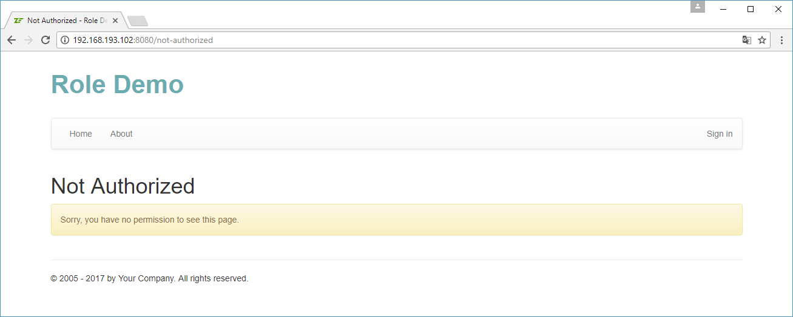
Add the following route to the module.config.php file of the User module:
return [
'router' => [
'routes' => [
'not-authorized' => [
'type' => Literal::class,
'options' => [
'route' => '/not-authorized',
'defaults' => [
'controller' => Controller\AuthController::class,
'action' => 'notAuthorized',
],
],
],
],
],
];
Then add the notAuthorizedAction() method to the AuthController in the User module:
/**
* Displays the "Not Authorized" page.
*/
public function notAuthorizedAction()
{
$this->getResponse()->setStatusCode(403);
return new ViewModel();
}
Finally, add the not-authorized.phtml view template file under the user/auth directory under the User module's view directory:
<?php
$this->headTitle("Not Authorized");
?>
<h1>Not Authorized</h1>
<div class="alert alert-warning">Sorry, you have no permission to see this page.</div>
Now you can see the Not Authorized page if you type the following URL into the address bar of the browser: "http://localhost/not-authorized".
Modifying the AuthManager Service
The next thing we will do is modifying the access filter inside the AuthManager service
we wrote for the User Demo sample. Particularly, we want to modify the filterAccess()
method. We want the filterAccess() method to use our RbacManager class.
But first we will modify the format of the access_filter key in the configuration. We want the key to allow
to permit access to:
- anyone if we specify the asterisk (
*); - any authenticated user if we specify the "commercial at" (
@); - a concrete authenticated user with the given
identityemail address if we specify (@identity) - any authenticated user with the given
permissionif we specify the plus sign followed by the permission name (+permission).
For example, here how the access_filter key would look like for the User module:
<?php
return [
//...
// The 'access_filter' key is used by the User module to restrict or permit
// access to certain controller actions for unauthorized visitors.
'access_filter' => [
'controllers' => [
Controller\UserController::class => [
// Give access to "resetPassword", "message" and "setPassword" actions
// to anyone.
['actions' => ['resetPassword', 'message', 'setPassword'], 'allow' => '*'],
// Give access to "index", "add", "edit", "view", "changePassword" actions
// to users having the "user.manage" permission.
['actions' => ['index', 'add', 'edit', 'view', 'changePassword'],
'allow' => '+user.manage']
],
Controller\RoleController::class => [
// Allow access to authenticated users having the "role.manage" permission.
['actions' => '*', 'allow' => '+role.manage']
],
Controller\PermissionController::class => [
// Allow access to authenticated users having "permission.manage" permission.
['actions' => '*', 'allow' => '+permission.manage']
],
]
],
//...
];
Below you can find the source code of the filterAccess() method of the AuthManager service:
/**
* This is a simple access control filter. It is able to restrict unauthorized
* users to visit certain pages.
*
* This method uses the 'access_filter' key in the config file and determines
* whenther the current visitor is allowed to access the given controller action
* or not. It returns true if allowed; otherwise false.
*/
public function filterAccess($controllerName, $actionName)
{
// Determine mode - 'restrictive' (default) or 'permissive'. In restrictive
// mode all controller actions must be explicitly listed under the 'access_filter'
// config key, and access is denied to any not listed action for unauthorized users.
// In permissive mode, if an action is not listed under the 'access_filter' key,
// access to it is permitted to anyone (even for not logged in users.
// Restrictive mode is more secure and recommended to use.
$mode = isset($this->config['options']['mode'])?$this->config['options']['mode']:'restrictive';
if ($mode!='restrictive' && $mode!='permissive')
throw new \Exception('Invalid access filter mode (expected either restrictive or permissive mode');
if (isset($this->config['controllers'][$controllerName])) {
$items = $this->config['controllers'][$controllerName];
foreach ($items as $item) {
$actionList = $item['actions'];
$allow = $item['allow'];
if (is_array($actionList) && in_array($actionName, $actionList) ||
$actionList=='*') {
if ($allow=='*')
// Anyone is allowed to see the page.
return self::ACCESS_GRANTED;
else if (!$this->authService->hasIdentity()) {
// Only authenticated user is allowed to see the page.
return self::AUTH_REQUIRED;
}
if ($allow=='@') {
// Any authenticated user is allowed to see the page.
return self::ACCESS_GRANTED;
} else if (substr($allow, 0, 1)=='@') {
// Only the user with specific identity is allowed to see the page.
$identity = substr($allow, 1);
if ($this->authService->getIdentity()==$identity)
return self::ACCESS_GRANTED;
else
return self::ACCESS_DENIED;
} else if (substr($allow, 0, 1)=='+') {
// Only the user with this permission is allowed to see the page.
$permission = substr($allow, 1);
if ($this->rbacManager->isGranted(null, $permission))
return self::ACCESS_GRANTED;
else
return self::ACCESS_DENIED;
} else {
throw new \Exception('Unexpected value for "allow" - expected ' .
'either "?", "@", "@identity" or "+permission"');
}
}
}
}
// In restrictive mode, we require authentication for any action not
// listed under 'access_filter' key and deny access to authorized users
// (for security reasons).
if ($mode=='restrictive') {
if(!$this->authService->hasIdentity())
return self::AUTH_REQUIRED;
else
return self::ACCESS_DENIED;
}
// Permit access to this page.
return self::ACCESS_GRANTED;
}
As you could see from the code, the method returns one of three constants:
ACCESS_GRANTEDif user is allowed to see the given page;AUTH_REQUIREDif user needs to authenticate first;ACCESS_DENIEDif user is denied to see the page.
Modifying the Dispatch Event Listener
Next, we will modify the Module class living in User namespace and
particularly its onDispatch() method. The main goal of this is that if the access filter
returns ACCESS_DENIED, we redirect the user to the Not Authorized page.
<?php
namespace User;
use Laminas\Mvc\MvcEvent;
use Laminas\Mvc\Controller\AbstractActionController;
use User\Controller\AuthController;
use User\Service\AuthManager;
class Module
{
//...
/**
* Event listener method for the 'Dispatch' event. We listen to the Dispatch
* event to call the access filter. The access filter allows to determine if
* the current visitor is allowed to see the page or not. If he/she
* is not authorized and is not allowed to see the page, we redirect the user
* to the login page.
*/
public function onDispatch(MvcEvent $event)
{
// Get controller and action to which the HTTP request was dispatched.
$controller = $event->getTarget();
$controllerName = $event->getRouteMatch()->getParam('controller', null);
$actionName = $event->getRouteMatch()->getParam('action', null);
// Convert dash-style action name to camel-case.
$actionName = str_replace('-', '', lcfirst(ucwords($actionName, '-')));
// Get the instance of AuthManager service.
$authManager = $event->getApplication()->getServiceManager()->get(AuthManager::class);
// Execute the access filter on every controller except AuthController
// (to avoid infinite redirect).
if ($controllerName!=AuthController::class)
{
$result = $authManager->filterAccess($controllerName, $actionName);
if ($result==AuthManager::AUTH_REQUIRED) {
// Remember the URL of the page the user tried to access. We will
// redirect the user to that URL after successful login.
$uri = $event->getApplication()->getRequest()->getUri();
// Make the URL relative (remove scheme, user info, host name and port)
// to avoid redirecting to other domain by a malicious user.
$uri->setScheme(null)
->setHost(null)
->setPort(null)
->setUserInfo(null);
$redirectUrl = $uri->toString();
// Redirect the user to the "Login" page.
return $controller->redirect()->toRoute('login', [],
['query'=>['redirectUrl'=>$redirectUrl]]);
}
else if ($result==AuthManager::ACCESS_DENIED) {
// Redirect the user to the "Not Authorized" page.
return $controller->redirect()->toRoute('not-authorized');
}
}
}
}
Adding Access Controller Plugin and View Helper
To query RbacManager inside of controllers and view templates, we need to create a
special controller plugin (which we will name Access) and a special view helper (which we will name
Access too).
Access Controller Plugin
Sometimes it is required to check some permission inside the controller. For example, this is needed
for the profile.own.view permission, which uses the dynamic assertion. For this purpose, we will
create the Access controller plugin.
The plugin code will be located inside the AccessPlugin.php file inside the Controller/Plugin directory
of the User module's source directory:
<?php
namespace User\Controller\Plugin;
use Laminas\Mvc\Controller\Plugin\AbstractPlugin;
/**
* This controller plugin is used for role-based access control (RBAC).
*/
class AccessPlugin extends AbstractPlugin
{
private $rbacManager;
public function __construct($rbacManager)
{
$this->rbacManager = $rbacManager;
}
/**
* Checks whether the currently logged in user has the given permission.
* @param string $permission Permission name.
* @param array $params Optional params (used only if an assertion is associated with permission).
*/
public function __invoke($permission, $params = [])
{
return $this->rbacManager->isGranted(null, $permission, $params);
}
}
The Access plugin's factory looks like the following:
<?php
namespace User\Controller\Plugin\Factory;
use Interop\Container\ContainerInterface;
use Laminas\ServiceManager\Factory\FactoryInterface;
use User\Service\RbacManager;
use User\Controller\Plugin\AccessPlugin;
/**
* This is the factory for AccessPlugin. Its purpose is to instantiate the plugin
* and inject dependencies into its constructor.
*/
class AccessPluginFactory implements FactoryInterface
{
public function __invoke(ContainerInterface $container, $requestedName, array $options = null)
{
$rbacManager = $container->get(RbacManager::class);
return new AccessPlugin($rbacManager);
}
}
The plugin is registered inside the module.config.php file as follows:
// We register module-provided controller plugins under this key.
'controller_plugins' => [
'factories' => [
Controller\Plugin\AccessPlugin::class => Controller\Plugin\Factory\AccessPluginFactory::class,
],
'aliases' => [
'access' => Controller\Plugin\AccessPlugin::class,
],
],
So, in your controller's action, you can easily call this plugin like the following:
if (!$this->access('profile.own.view', ['user'=>$user])) {
return $this->redirect()->toRoute('not-authorized');
}
Access View Helper
Sometimes, it may be required to query the RbacManager inside a view template. For example,
you may need to hide or show some HTML block based on current user's permissions. To do that,
we will implement the Access view helper.
The view helper's code will be located inside the Access.php file inside the View/Helper directory
of the User module's source directory:
<?php
namespace User\View\Helper;
use Laminas\View\Helper\AbstractHelper;
/**
* This view helper is used to check user permissions.
*/
class Access extends AbstractHelper
{
private $rbacManager = null;
public function __construct($rbacManager)
{
$this->rbacManager = $rbacManager;
}
public function __invoke($permission, $params = [])
{
return $this->rbacManager->isGranted(null, $permission, $params);
}
}
The Access view helper's factory looks like the following:
<?php
namespace User\View\Helper\Factory;
use Interop\Container\ContainerInterface;
use Laminas\ServiceManager\Factory\FactoryInterface;
use User\Service\RbacManager;
use User\View\Helper\Access;
/**
* This is the factory for Access view helper. Its purpose is to instantiate the helper
* and inject dependencies into its constructor.
*/
class AccessFactory implements FactoryInterface
{
public function __invoke(ContainerInterface $container, $requestedName, array $options = null)
{
$rbacManager = $container->get(RbacManager::class);
return new Access($rbacManager);
}
}
The view helper is registered inside the module.config.php config file as follows:
// We register module-provided view helpers under this key.
'view_helpers' => [
'factories' => [
View\Helper\Access::class => View\Helper\Factory\AccessFactory::class,
],
'aliases' => [
'access' => View\Helper\Access::class,
],
],
So, you can easily call the view helper from any of your view templates as follows:
if ($this->access('profile.own.view, ['user'=>$user]))) {
// do something...
}
Using the User Module
Congratulations, now our Role Demo is ready, so we make some resume of how you typically use it if you plan to base your own website on it.
First of all, you need to create all needed roles and permissions through the convenient user interface that we created. Assign a role (or several roles) to each website user.
Then edit the module.config.php configuration configuration file in your module and add two keys:
- the
rbac_managerkey will contain settings for theRbacManager(particularly the configuration of assertion manager(s));
An example of that key is presented below:
// This key stores configuration for RBAC manager.
'rbac_manager' => [
'assertions' => [Service\RbacAssertionManager::class],
],
- the
access_filterkey stores the access rules for the pages of your website. It typically looks like below:
'access_filter' => [
'options' => [
'mode' => 'restrictive'
],
'controllers' => [
Controller\IndexController::class => [
// Allow anyone to visit "index" and "about" actions
['actions' => ['index', 'about'], 'allow' => '*'],
// Allow authorized users to visit "settings" action
['actions' => ['settings'], 'allow' => '@']
],
]
],
The * and @ in the allow subkeys are not the only options. You can make the allow
subkeys to look as follows. We allow access to the page to:
- anyone if we specify the asterisk (
*); - any authenticated user if we specify the "commercial at" (
@); - a concrete authenticated user with the given
identityemail address if we specify (@identity) - any authenticated user with the given
permissionif we specify the plus sign followed by the permission name (+permission).
If your website has some dynamic assertions, extend the assert() method of the
existing RbacAssertionManager class (or write and register your own assertion manager):
public function assert(Rbac $rbac, $permission, $params)
{
$currentUser = $this->entityManager->getRepository(User::class)
->findOneByEmail($this->authService->getIdentity());
if ($permission=='post.own.edit' && $params['post']->getUser()->getId()==$currentUser->getId())
return true;
if ($permission=='post.own.publish' && $params['post']->getUser()->getId()==$currentUser->getId())
return true;
return false;
}
If you want to check permissions in a controller action, you can use the Access controller plugin as follows:
if (!$this->access('profile.own.view', ['user'=>$user])) {
return $this->redirect()->toRoute('not-authorized');
}
If you want to check permissions in a view template, you can use the Access view helper:
if ($this->access('profile.own.view', ['user'=>$user))) {
// do something...
}
That's all! That simple! Enjoy!
Summary
In this chapter we have implemented the Role Demo website which demonstrates how to use roles and permissions in Laminas.
A role is basically a group of users. A user may be assigned with one or several roles at once.
A role may be assigned one or more permissions. A permission is a single action in the system.
A dynamic assertion is an additional rule associated with the permission.
Roles may be organised into an hierarchy, when parent roles inherit permissions from their child roles.